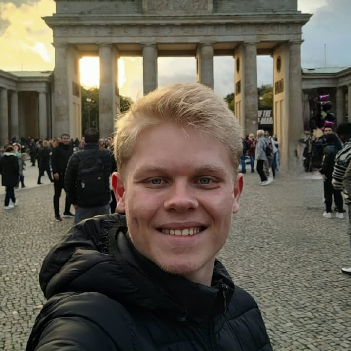

🌍 International explorer
Student exchange in Germany during 2024 and 2025.
LUIZANK.exe | Personal portfolio
Software Engineering student · ERP Support Analyst · Aspiring Web Developer
Turning coffee, curiosity and a few bugs into learning and code.

Class: Developer in training
Base: Dois Vizinhos, Paraná, Brazil
Main quest: learn, build solutions and grow in the technology field.
Hi! I'm Luiz. I study Software Engineering at UTFPR and work in technical support for CISS ERP systems. I enjoy understanding how things work, investigating issues and turning ideas into solutions.
My journey also includes international experiences and volunteering — two areas that have taught me a lot about people, communication and teamwork.
Experiences that have contributed to my growth in and beyond technology.
Student exchange in Germany during 2024 and 2025.
Four years with Interact Club of Dois Vizinhos and currently involved with Rotaract.
Working in technical support for CISS ERP systems.
English, German and Spanish skills developed through study and practical experience.
An overview of the paths that have shaped my education and growth.
Four years of volunteering, community projects and teamwork. This experience sparked my interest in exchange programmes and international experiences.
A chance to experience new cultures, languages and ways of living and learning. An important step in my personal development.
Continuing my involvement in volunteering, leadership and community-impact projects.
Degree at the Federal University of Technology – Paraná, Dois Vizinhos campus. Expected period: 2024–2028.
During my time with Interact and Rotaract, I had the opportunity to take on different roles and responsibilities. These experiences helped me develop leadership, public speaking, communication, activity planning, confidence speaking to an audience and teamwork.
Company: CISS
Location: Dois Vizinhos, Paraná, Brazil
Period: December 2025 – present
Providing technical support for retail ERP systems, analysing issues, investigating data and testing web software features.
Experience with PostgreSQL and SQLite databases, helping analyse and resolve system-related issues.
Location: Dois Vizinhos, Paraná, Brazil
Period: April 2022 – March 2023
Assisted patients and visitors, organised appointments and provided information about the clinic's services.
Also helped manage the cash register and record payments, organise patient records and documents, and handle day-to-day administrative tasks.
Projects that represent hands-on experience and new learning challenges.
Status: completed
During the Aprender e Crescer course, I helped develop an initial version of a software project related to the institution's website. The experience contributed to my learning in programming and web solution development.
Status: in development
A project developed with two classmates to help small service providers organise appointments and customer bookings.
An opportunity to apply Software Engineering knowledge to a practical solution.
Status: ongoing
I also work on small projects related to programming and web development.
The tools and knowledge in my current toolkit.
Have an opportunity, an interesting project or want to talk about technology? Get in touch!
Fill in the fields below to prepare your message.
Thank you very much for reaching out! Your message has been prepared, but it has not been sent because this form is not connected to a sending service.